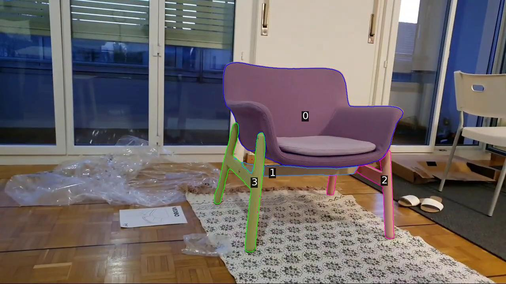
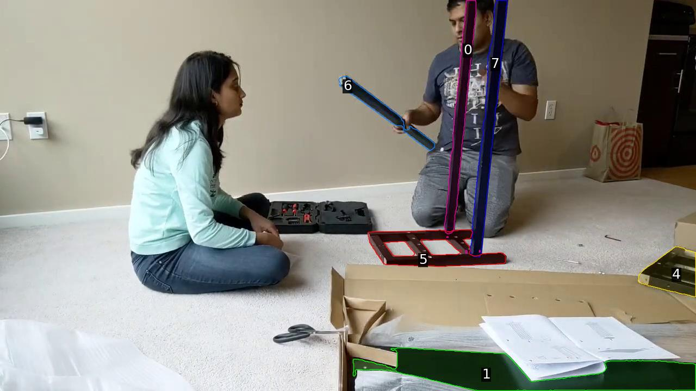
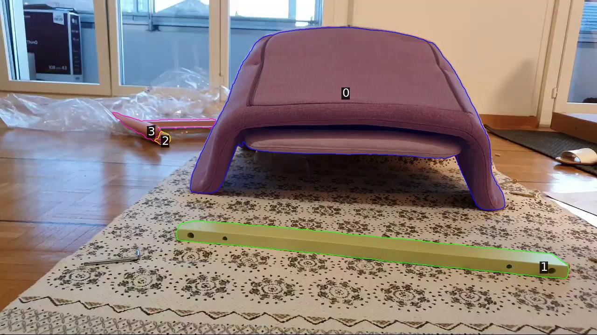

Inputs
Key-frame or trimmed videos, paired with visual prompts that mark the parts mentioned in the question.
Furniture assembly as a spatio-temporal stress test
Evaluating Spatio-Temporal Understanding in Large Vision-Language Models through Furniture Assembly
Flat-Pack Bench evaluates whether large vision-language models can reason about part identity, contact events, assembly order, and final connectivity across real furniture assembly videos.
Aditya Chetan, Eric Cai, Peeyush Kushwaha, Bharath Raj Nagoor Kani, Utkarsh Mall, Qianqian Wang, Noah Snavely, Bharath Hariharan


602 multiple-choice questions from 50 real assembly videos across temporal localization, temporal ordering, mating, and tracking.
Overview
Most project pages introduce the benchmark through a short abstract, then move into figures and anchored sections. This variant follows that shape: it keeps the top of the page academic and compact, then lets examples, tables, and results carry the story.
The core task is simple to state but hard to solve. Given a video and visual prompts that mark the relevant parts, a model must answer multiple-choice questions about what connects, when it connects, and whether identities remain consistent across time.
Benchmark Design
The benchmark separates broad video understanding into concrete assembly skills. Each family isolates a different failure mode: ordering events, localizing contact changes, checking final connectivity, or tracking object identity through motion and occlusion.
| Family | Questions | What the model must infer |
|---|---|---|
| Temporal Localization | 103 | Which connection happened first, last, next, or most recently. |
| Temporal Ordering | 155 | The exact order in which parts or part-pairs became connected. |
| Mating | 87 | Whether two labeled parts are connected in the final assembly. |
| Tracking | 257 | Which part in one state corresponds to a labeled part in another. |
Assembly creates visually grounded events with persistent parts, occlusions, repeated objects, and irreversible contact changes. Those properties make it a compact stress test for spatio-temporal reasoning.
Visual Prompts
Each example pairs a video with one or more visual prompts. Non-tracking questions usually show the relevant labeled parts in a single annotated image. Tracking questions ask for correspondence across two states.



Evaluation
The paper reports micro-average accuracy and per-family accuracy across prompt and video conditions. This page keeps the setup visible without embedding the full interactive browser; the full viewer remains one click away from the resource links.
Key-frame or trimmed videos, paired with visual prompts that mark the parts mentioned in the question.
Separate images, collages, concatenated prompts, and mixed-media variants test how presentation affects model behavior.
Models answer by choosing one option. Scores are reported overall and for TORD, TLOC, TRACK, and MATE.
Results
micro-average accuracy
InternVL3-78B, concat prompt, key-frame video
GPT-5, mixed-media prompt, key-frame video
| Model | Prompt | Video | Micro | TORD | TLOC | TRACK | MATE |
|---|---|---|---|---|---|---|---|
| InternVL3-78B | Concat | Key-frame | 41.03 | 43.87 | 39.81 | 42.02 | 34.48 |
| Qwen2.5-VL-72B | Mixed-Media | Trimmed | 40.37 | 41.29 | 30.10 | 45.14 | 36.78 |
| GPT-5 | Mixed-Media | Key-frame | 37.71 | 40.65 | 53.40 | 25.68 | 49.43 |
Discussion
Following the reference structure puts the paper identity, abstract, resources, and contents above the fold. The reader then moves through evidence in a predictable research-project sequence.
The interactive viewer and full results table stay linked from the header. This keeps the landing page lighter while preserving paths to the detailed benchmark artifacts.
Citation
@InProceedings{Chetan_2026_CVPR,
author = {Chetan, Aditya and Cai, Eric and Kushwaha, Peeyush and Kani, Bharath Raj Nagoor and Mall, Utkarsh and Wang, Qianqian and Snavely, Noah and Hariharan, Bharath},
title = {Flat-Pack Bench: Evaluating Spatio-Temporal Understanding in Large Vision-Language Models through Furniture Assembly},
booktitle = {Proceedings of the IEEE/CVF Conference on Computer Vision and Pattern Recognition (CVPR)},
month = {June},
year = {2026},
pages = {16624-16634}
}